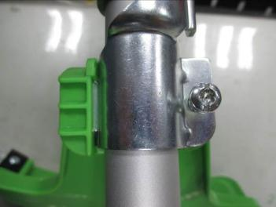

Installing the cutting head shield
WARNING!
The line cut-off blade on the cutting head shield is sharp. Aviod connect with the blade. Failure to aviod contact can result in serious personal injury.
1.Remove the screw from protection guards.
 2.Insert the left tab into the slot on the protecting guard. 3.Align the screw hole in the mounting bracket with the screw hole int the protection guards. 4.Tighten the screw through the mounting bracket and into the protection guards by the screw driver provided.